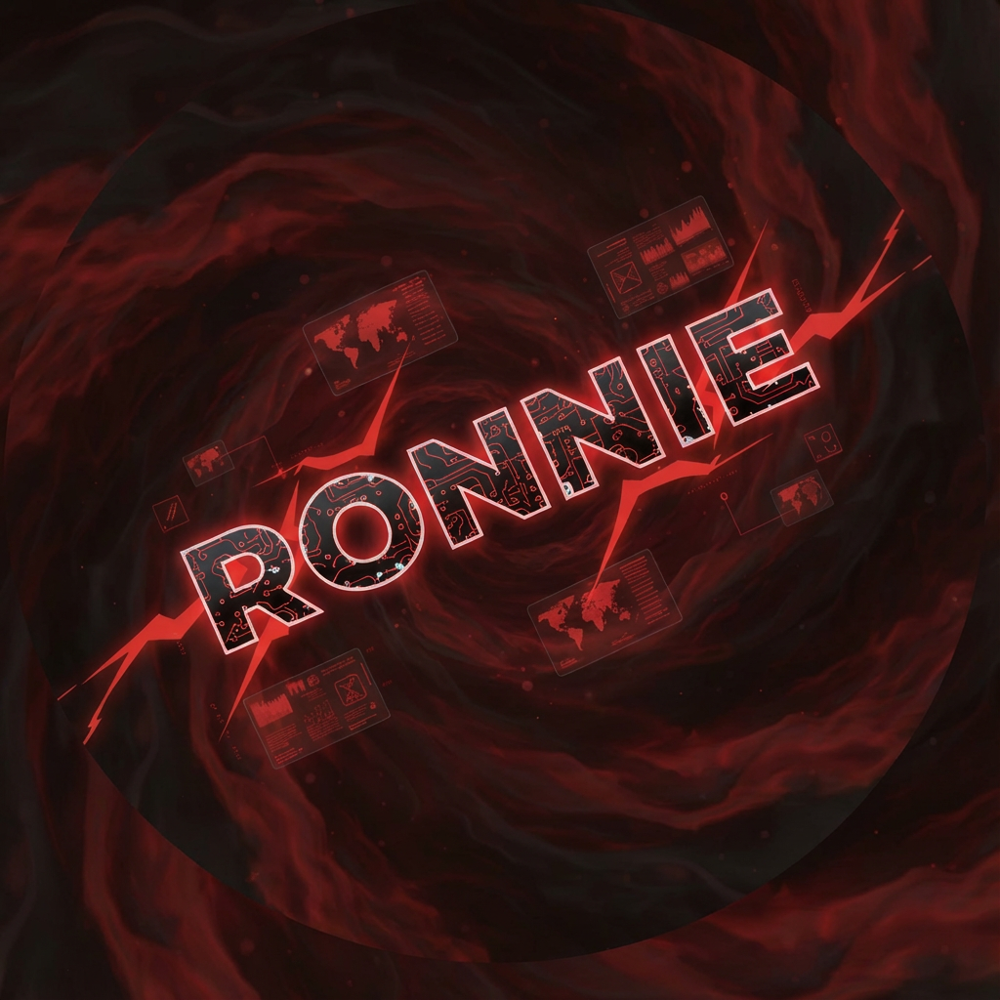

Scroll the cards below, or click any script to open its details page.

Kroll Developments is a business that focuses on coding custom, or requested systems and websites in JavaScript, HTML, and Lua.
I am the owner of Kroll Developments. I started off coding JavaScript but have adapted to use Lua, HTML, and multiple other languages. I have worked on 3 FiveM servers and countless bots for many different systems and functions.